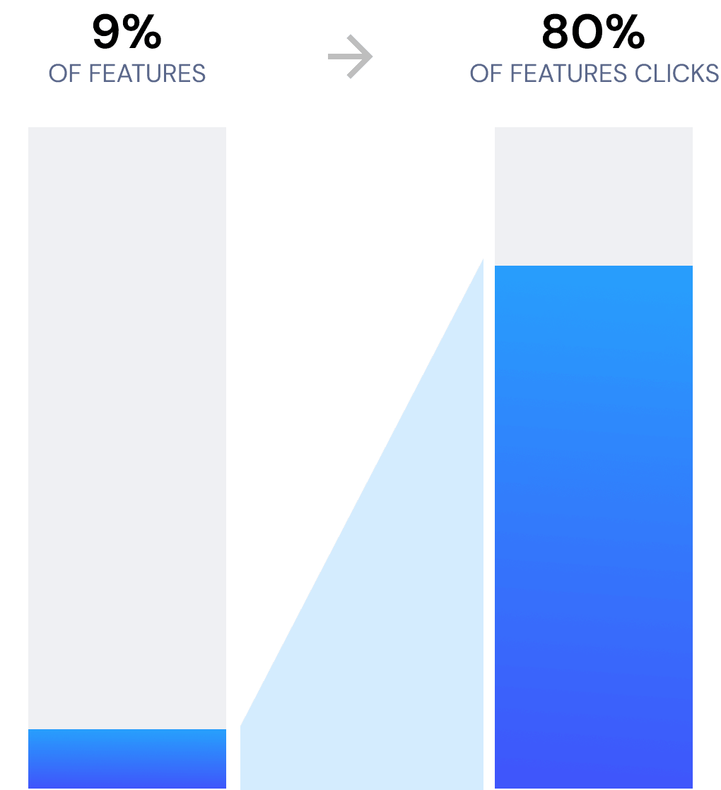
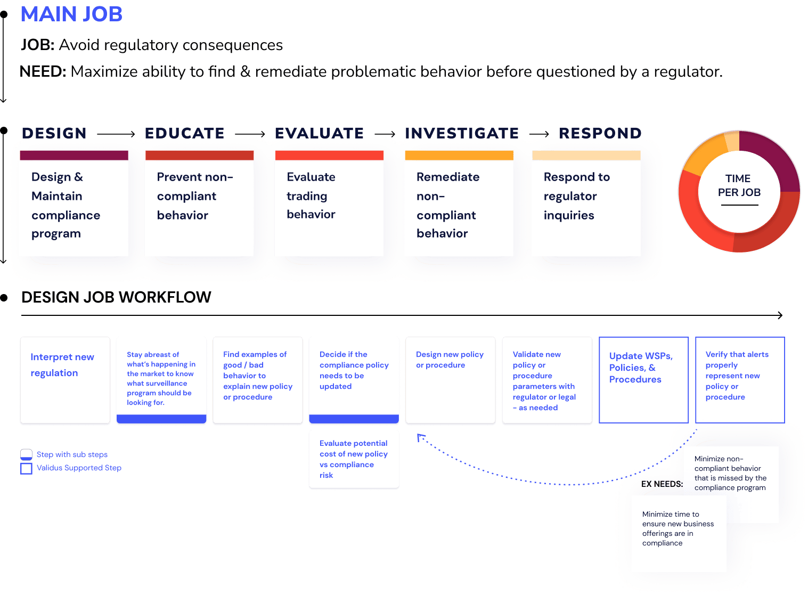
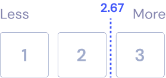
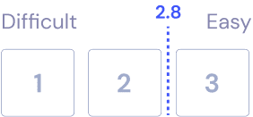
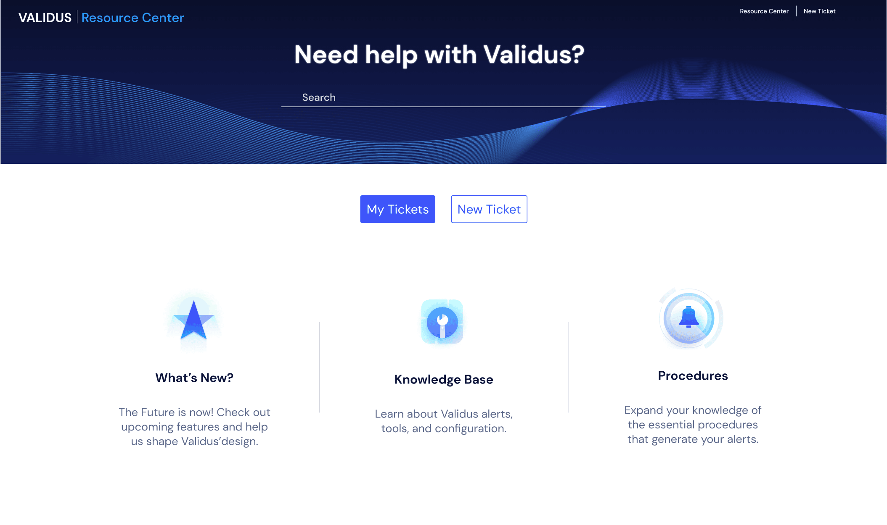

Project Background
Validus, a leading trade surveillance platform, empowers compliance officers to monitor and enforce regulations against market manipulation. It supports trading desks, enhances compliance teams' capabilities, and streamlines audit functions with real-time monitoring and customizable reporting. Catering to a wide range of clients, including exchanges, banks, and broker-dealers across various asset classes—equities, options, futures, and digital assets—Validus plays a critical role in maintaining the safety and integrity of financial markets.
With the financial landscape rapidly evolving, Validus faced increased competition from rivals offering more modern solutions. The platform, burdened by 15 years of accumulated design and technical debt while reliant on an outdated, non-standard frontend code (dojo), struggled to keep pace with market demands. This legacy architecture not only made maintenance significantly difficult but also presented a major hurdle in hiring new developers, as finding individuals with Dojo expertise was virtually impossible, requiring substantial training for anyone joining the team. Moreover, a transition to Angular promised a tenfold reduction in code volume for similar features, boosting both scalability and maintainability.
Our Goal:
Create a more marketable, scalable, and maintainable app for the business while improving usability for the end-user through core jobs to be done.
Definition
Redesigning an entire application is a formidable challenge that requires meticulous planning and execution. It involves navigating through technical complexities, adapting organizational structures, and ensuring effective prioritization, resource, and timeline management to keep the project on track. Seamless integration with existing systems is crucial to maintain backward compatibility. But how and where did we begin?
-
User Satisfaction
Preserving or enhancing user experience and functionality was crucial for ensuring user satisfaction & adoption. -
Integration W/Existing Systems
Required deep technical understanding of the app's workings, database, and APIs. -
Organizational Adaptations
Significant adjustments within the organization, affected processes, roles, and responsibilities. -
Resource & Timeline Management
Effective resource allocation and strict adherence to timelines were vital for the project's success.
Strategy (building the right thing)
Despite the original app taking 15 years to build, our timeframe was, understandably, much shorter. I implemented a usage data monitoring application as a crucial piece to our successful starting strategy. For the first time, we could gather in-depth insights into how our users interacted with our app in real time. We accurately mapped user workflows, pinpointed which features were most utilized, and importantly, identified underperforming areas.
This tracking enabled us to apply the Pareto Principle — 20% of features drove 80% of user engagement. However, we recognized that data alone couldn't paint the full picture. It could signal where problems lay but not why they existed. Therefore, we complemented our quantitative analysis with qualitative research to delve deeper into user behaviors and needs.

To further refine our understanding, I embraced the Jobs to Be Done (JTBD) framework. This approach shifted our focus from merely tweaking the existing product to understanding the core tasks and needs of our customers. Through 13 moderated interviews, we explored users' daily activities, identifying key jobs, the time spent on them, and their primary needs and workflows. The dual approach of quantitative data from the usage monitoring application and qualitative insights from JTBD interviews provided a comprehensive view of our user base. It enabled us to make informed decisions on feature prioritization and design directions, setting the stage for a user-centered redesign of the application.
Armed with these insights, I engaged stakeholders and the wider company in setting a roadmap for feature development. This process wasn't just about deciding what to build but understanding our users at a fundamental level, ensuring that every feature we decided to include or enhance was rooted in real user needs and behaviors. As a result, our redesign efforts were deeply informed by a blend of data-driven and user-centric research, ensuring that we were not just creating a new version of the app but one that was finely tuned to the demands and workflows of our users.

End-to-End Success
I steered our teams through a comprehensive redesign process, centered around reimagining the application’s job flows. This involved creating prototypes and conducting task tests to validate our designs. That we designed with and not for our users. This phase was highly collaborative, involving key stakeholders and at least one tech lead from the outset to ensure that our plans were grounded in technical feasibility and aligned with business goals.
Example research results:
- 7/7 participants found the bubble chart from the scatterplot
- 6/7 understood that the size of the bubble represented account volume
- 5/7 understood the “Bubble Size By:” toggle


Adopting agile scrum methodologies, I steered the end-to-end development of these designs, emphasizing flexibility, team collaboration, and rapid iterations. This approach ensured that we remained responsive to feedback and could adapt swiftly to emerging challenges or insights.
A successful beta launch requires a solid communication strategy. Previously reliant on PDF manuals and email for user assistance, I introduced a significant shift towards more interactive and user-friendly support methods. By implementing in-app guides and establishing a help center, we created a dynamic environment where users could easily find, share, and update information. Ensuring users had the help they needed at their fingertips, thereby significantly enhancing their overall experience.
